Here I have included some videos on my Youtube of 2D and 3D animation projects I completed 2012-2013. These projects were from some of the classes I took at Washington State University Vancouver.
Here are some graphic design projects I have completed. The first section has my newer designs: A logo for a local BNSF Railroad SMART Union and a company logo for Tap Media LLC. The second section has designs that I have collabed on for classes while at WSU Vancouver. The third section has my older designs from when I was first starting out with graphic design in high school and Clark College.
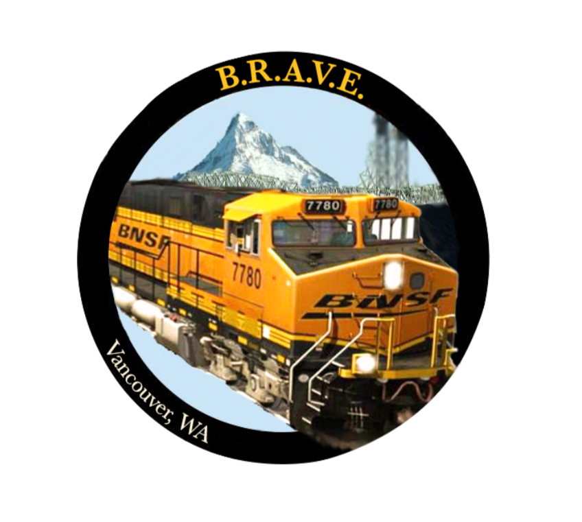
The first design is a logo I created for a local BNSF Railroad SMART union, which I was also going to create a website for, but they decided not to. The second design is a logo for a small business my friend and I originally started called Tap Media LLC. We had a couple of clients, but not a big enough team for help, so the business never grew and I never had the chance to make a website for it.
Collab Designs
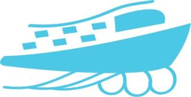
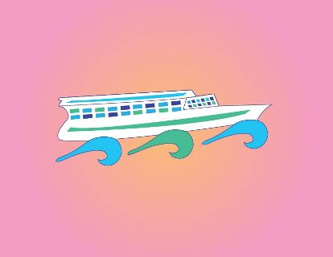
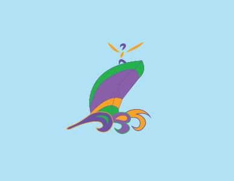
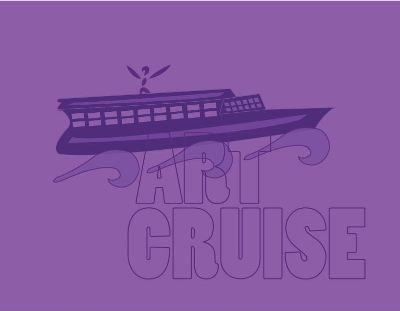
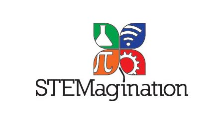
Older Designs
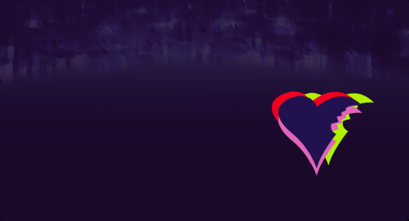
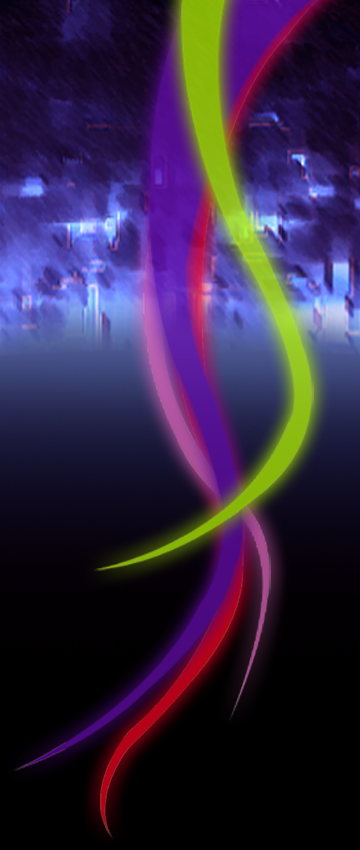
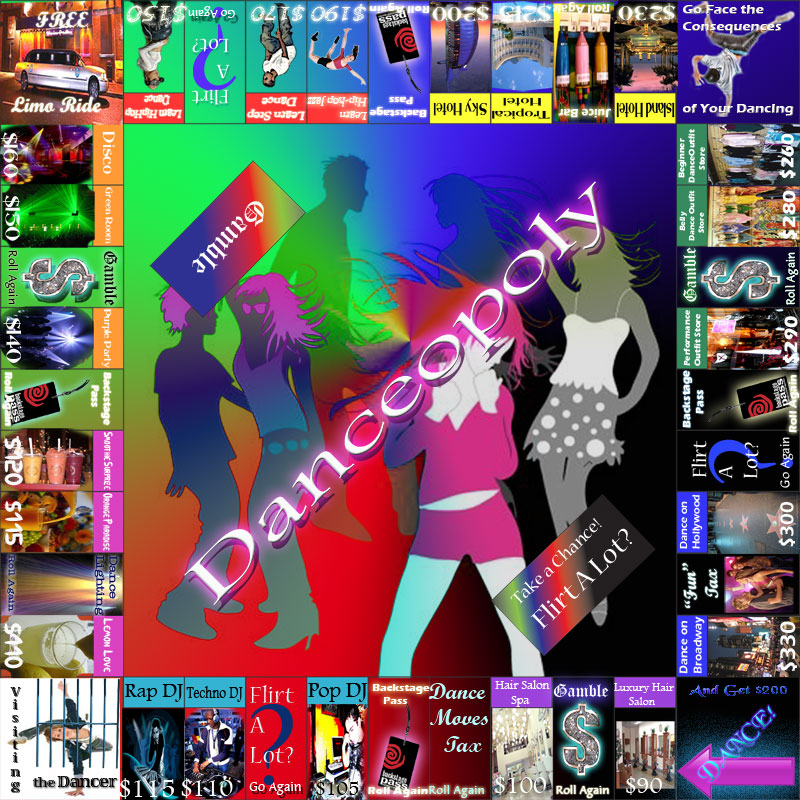
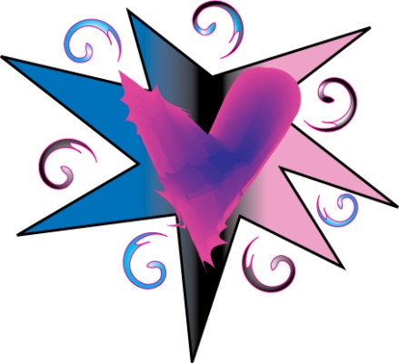
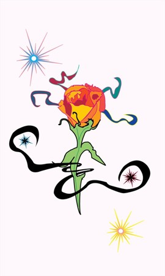
Designed and Developed by Melissa Fuger ©2026 All rights reserved.
 transp.png "melissa fuger logo")